PROJECT CASE STUDY // FUSION 360
EXODUS Mars Rover Platform
An independently designed rover platform integrating mobility, mechanical subsystems, articulated components, sensor systems, and engineering documentation.
Project Overview
EXODUS was created as a complete mechanical CAD project rather than a single isolated part. The design combines a custom chassis, six-wheel rocker-bogie suspension, mechanical arms, tooling, solar panels, RTG-style components, rotating sensor elements, and camera systems.
The project also included engineering drawings, motion studies, dimensional tolerances, fits, and orthographic views for major components and subassemblies.
Mobility
Six-wheel rocker-bogie suspension and custom wheel/hub geometry.
Manipulation
Articulated arm concepts, drill components, grabber elements, and claws.
Power & Sensors
Solar panel assembly, RTG-inspired hardware, camera head, and dome sensor.
Documentation
Component drawings, dimensions, orthographic views, fits, and technical presentation sheets.

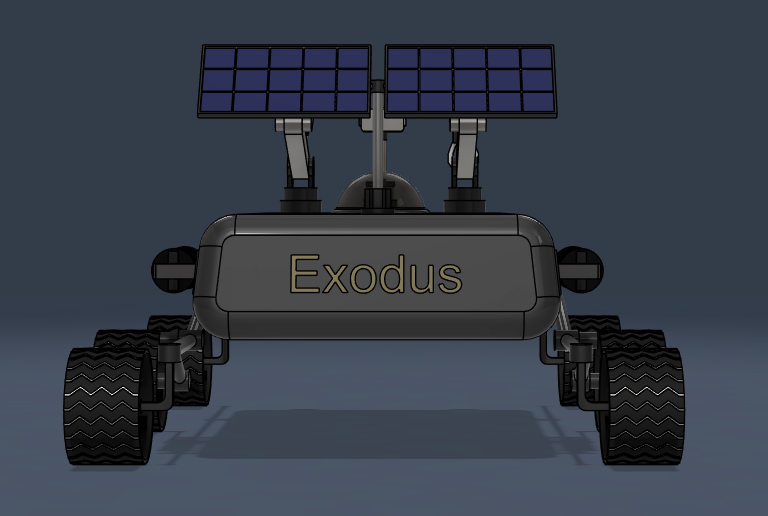
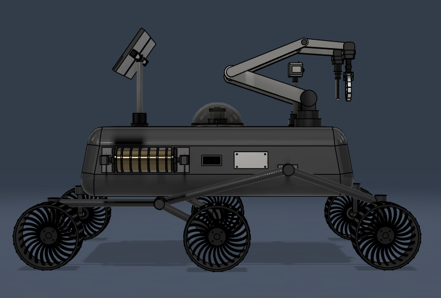
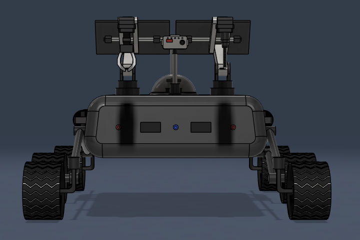
TECHNICAL DRAWINGS
Selected component and subassembly sheets.
Click any drawing to enlarge it.
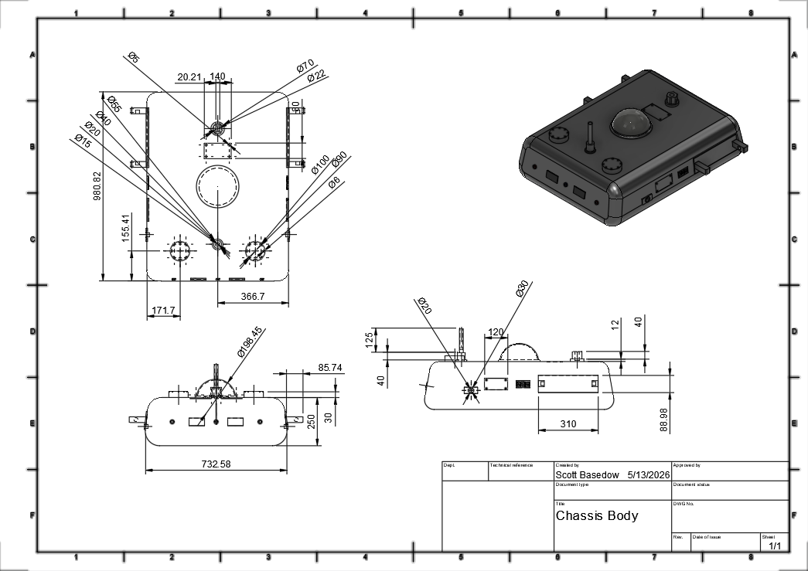
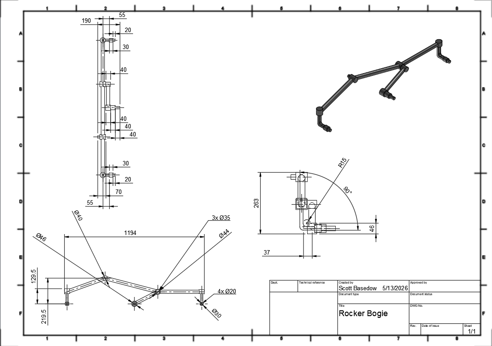
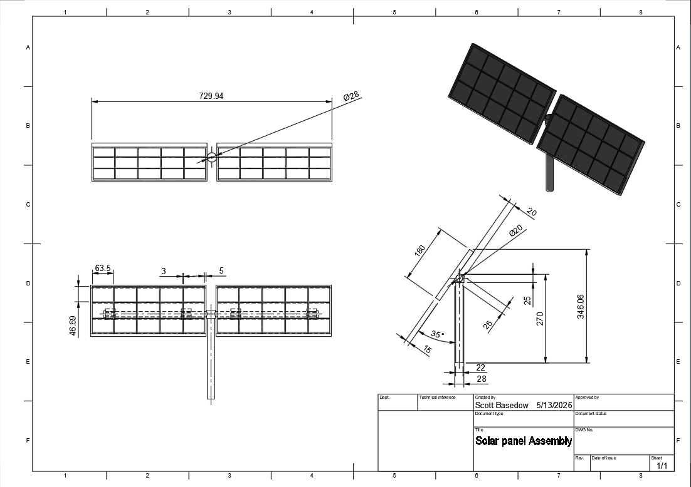
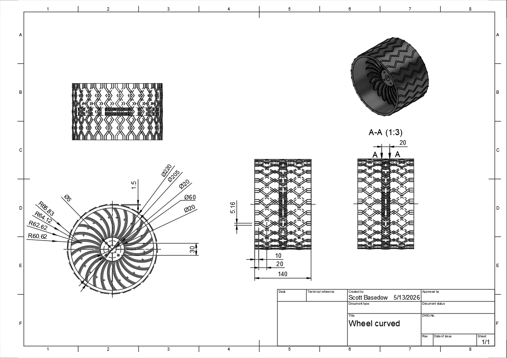
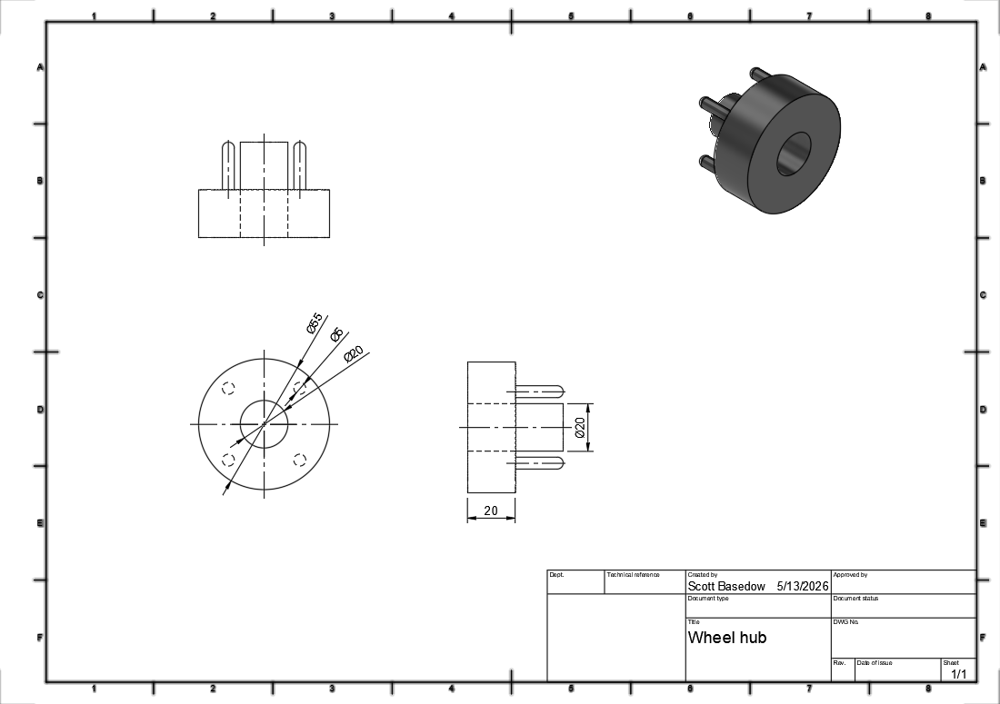
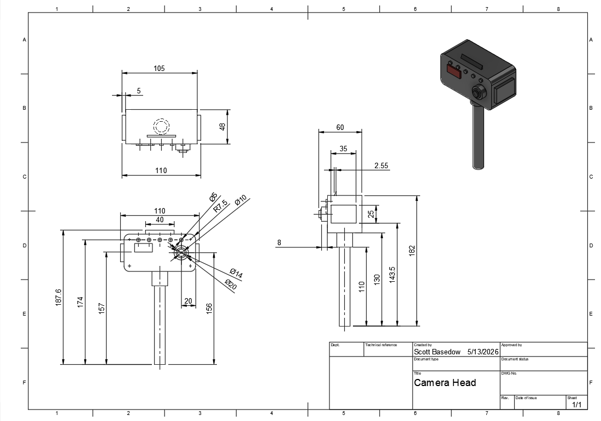
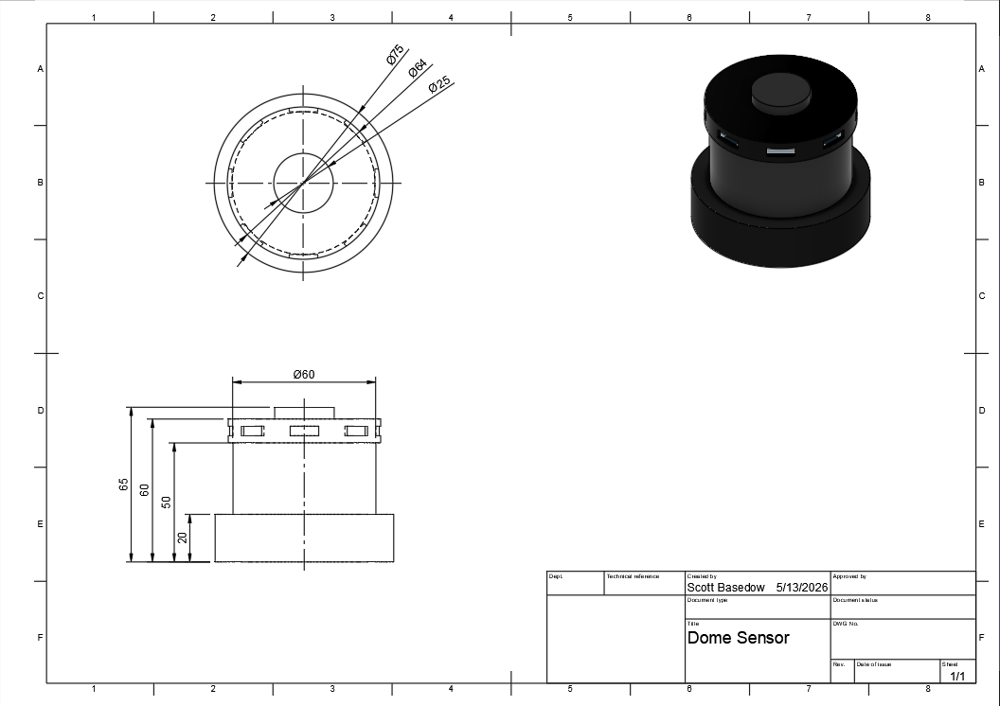
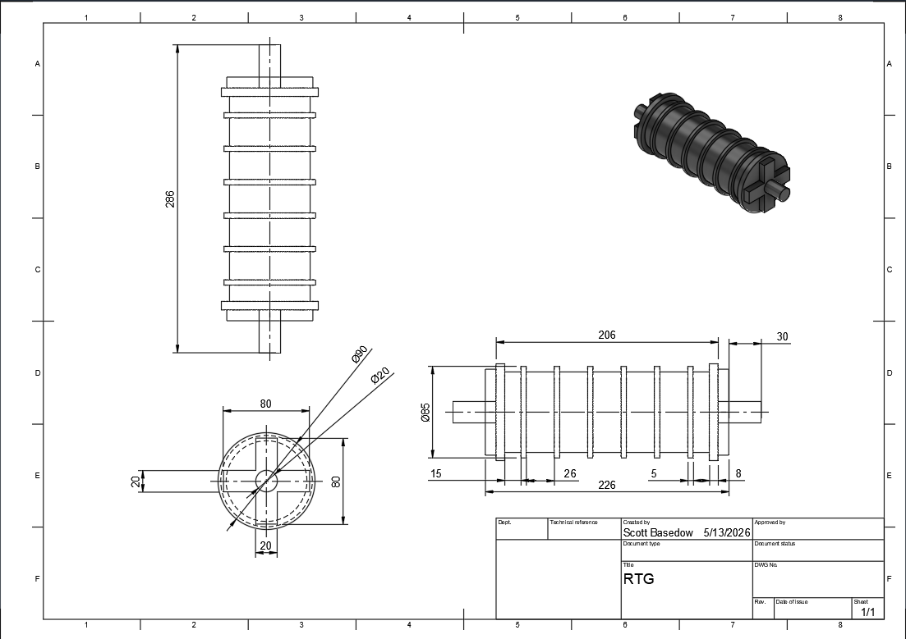
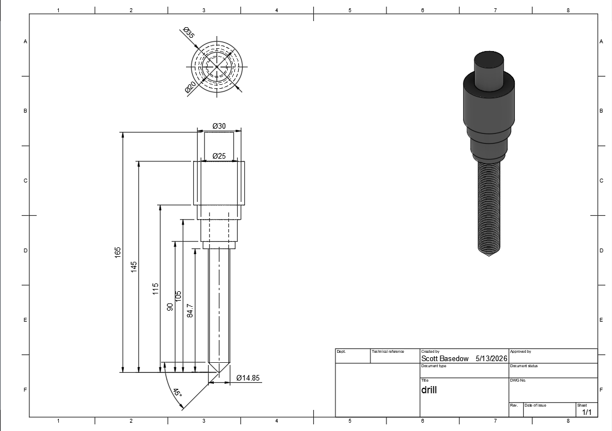
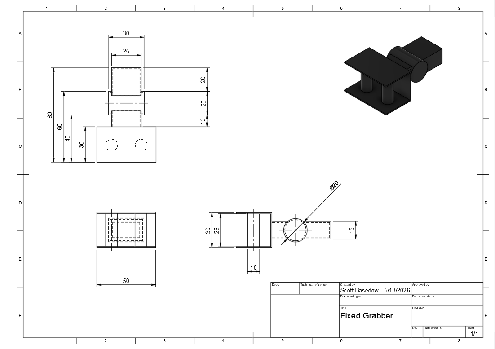
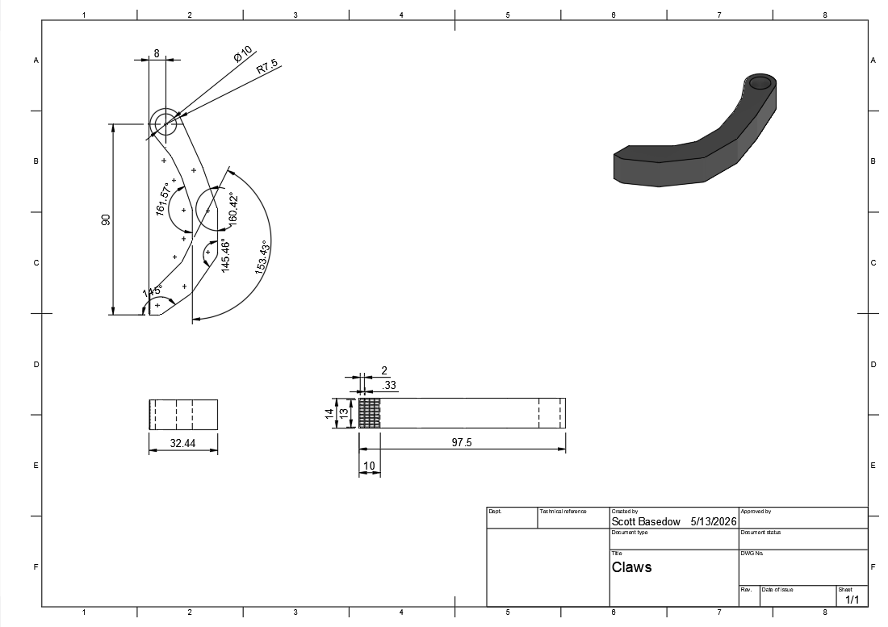
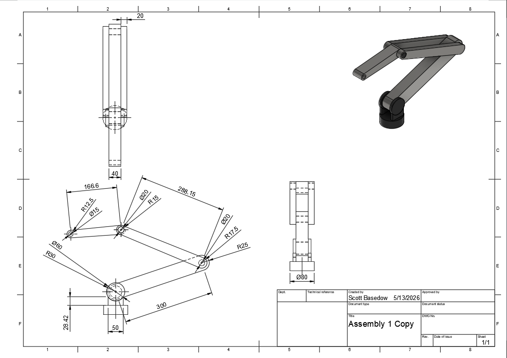